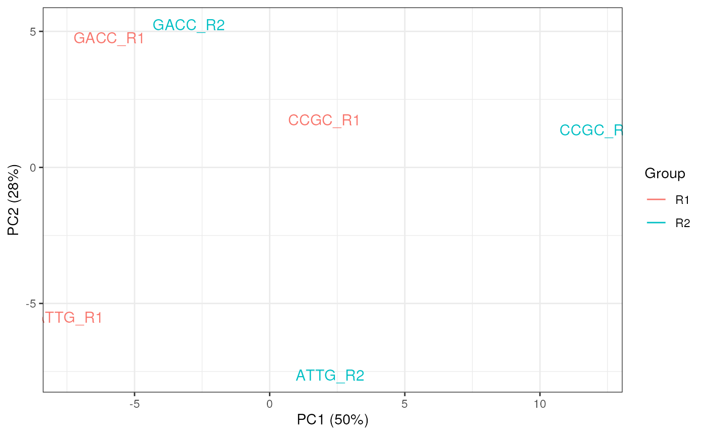

Draw a PCA plot for Fast QC modules across multiple samples
![[Experimental]](figures/lifecycle-experimental.svg)
plotFastqcPCA(
x,
module = "Per_sequence_GC_content",
usePlotly = FALSE,
labels,
sz = 4,
groups,
...
)
# S4 method for ANY
plotFastqcPCA(
x,
module = "Per_sequence_GC_content",
usePlotly = FALSE,
labels,
sz = 4,
groups,
...
)
# S4 method for character
plotFastqcPCA(
x,
module = "Per_sequence_GC_content",
usePlotly = FALSE,
labels,
sz = 4,
groups,
...
)
# S4 method for FastqcDataList
plotFastqcPCA(
x,
module = "Per_sequence_GC_content",
usePlotly = FALSE,
labels,
sz = 4,
groups,
...
)Arguments
- x
Can be a
FastqcDataListorcharactervector of file paths- module
charactervector containing the desired FastQC module (eg. c("Per_base_sequence_quality", "Per_base_sequence_content"))- usePlotly
logical. Output as ggplot2 (default) or plotly object.- labels
An optional named vector of labels for the file names. All filenames must be present in the names. File extensions are dropped by default
- sz
The size of the text labels
- groups
Optional factor of the same length as x. If provided, the plot will be coloured using this factor as the defined groups. Ellipses will also be added to the final plot.
- ...
Used to pass additional attributes to theme() and between methods
Value
A standard ggplot2 object, or an interactive plotly object
Details
This carries out PCA on a single FastQC module and plots the output using either ggplot or plotly. Current modules for PCA are Per_base_sequence_quality, Per_sequence_quality_scores, Per_sequence_GC_content, Per_base_sequence_content, and Sequence_Length_Distribution.
If a factor is provided in the groups argument, this will be applied to the
plotting colours and ellipses will be drawn using these groups.
Only the labels will be plotted using geom_text()
Examples
# Get the files included with the package
packageDir <- system.file("extdata", package = "ngsReports")
fl <- list.files(packageDir, pattern = "fastqc.zip", full.names = TRUE)
# Load the FASTQC data as a FastqcDataList object
fdl <- FastqcDataList(fl)
grp <- as.factor(gsub(".+(R[12]).*", "\\1", fqName(fdl)))
plotFastqcPCA(fdl, module = "Per_sequence_GC_content", groups = grp)
#> Too few points to calculate an ellipse
#> Too few points to calculate an ellipse
#> Warning: Removed 2 row(s) containing missing values (geom_path).
